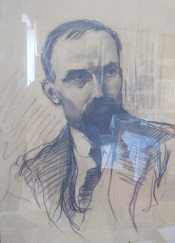
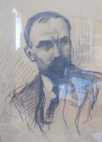

U svojem muvanju po Hvaru u mjestu GDINJ, na istočnom delu ostrva, imao priliku upoznati umetničku familiju Radovanović. Više ima o njegovoj kćerki Tatjani, a i sin Ivo nije pao daleko od stabla.
Gdinj je naselje na ostrvu Hvaru, u sastavu opštine Jelsa. Nalazi se 25km istočno od Jelse na 361 m nadmorske visine i s njim završava Opštine Jelsa. Udaljen je 8 km istočno od Zastražišća, 3 km od Selaca Bogomoljskih i 6 km zapadno od Bogomolja. U sklopu naslje se nalazi osam zaselaka: Bonkovići, Stara Crkva, Banovi Dvori, Vrvolići, Visoka, Talkovići, Dugi Dolac i Nova Crkva.
Kretanje broja stanovnika 1857.-2001:
U svojem muvanju po Hvaru u mjestu GDINJ, na istočnom delu ostrva, imao priliku upoznati umetničku familiju Radovanović. Više ima o njegovoj kćerki Tatjani, a i sin Ivo nije pao daleko od stabla.
Tatjana Radovanović (Gdinj, 1933.) je hrvatska pesnikinja, slikarica i grafičarka s ostrva Hvara. Piše pesme na čakavskom narečju hrvatskog jezika i na francuskom jeziku. Živi i radi u Parizu. Kćer je hrvatskog zaslužnog humanista, slikara, pesnika i društvenog radnika prof. Ivka Radovanovića. Sestra je likovnog umetnika Ive Radovanovića. Osnovnu školu je pohađala u Gdinju. U Split je pošla pohađati srednju školu, Školu primienjene umetnosti. U Zagrebu je završila umetničku školu. Jedno je vrieme je radila u osnovnim školama u Gdinju i Bogomolju kao nastavnica likovnog obrazovanja. Godine 1960. je pošla studirati na zagrebačkoj Akademiji likovnih umetnosti, na tek utemeljenom Pedagoškom odseku. Na fakultetu je došla do statusa asistentice (kod prof. Berakovića). Godine 1965. je otišla u Pariz, gdje je ostala živjeti i raditi. Održala je deset likovnih izložaba. Učestvovala je na nekim Susretima čakavskih pesnikinja ostrva Hvara (2008., 2009.). 2005. je na manifestaciji Croatia rediviva: Ča, Kaj, Što - baštinski dani dobila nagradu Ovekovečenog pesnika (poeta olivatus).